Legohus CRM · för nya säljare
Från första förfrågan till nyckeln.
En genomgång av hela säljsystemet: var allt finns, hur du jobbar varje dag och hur en affär går från förfrågan till överlämning. Varje del har en guide du kan prova direkt i CRM:et.
Bläddra med , Mellanslag eller svep. O visar alla bilder. Allt i bilderna är exempeldata.
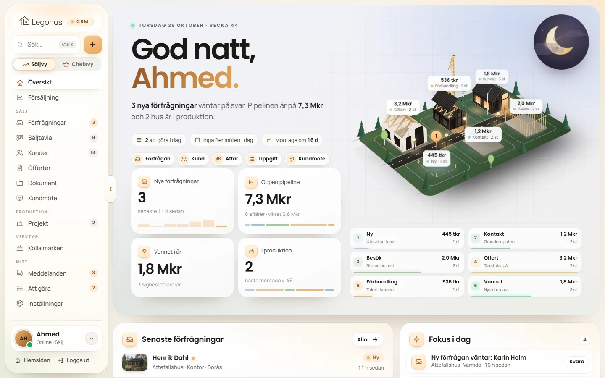
Det stora flödet
Tio steg. Ett system.
Så går en kund genom CRM:et. Klicka på ett steg för att hoppa dit.
Grunderna
Hitta rätt på en sekund.
- Menyn följer arbetet: Sälj, Produktion, Verktyg och Mitt. Brickorna visar antal och vad som väntar.
- Ctrl K (⌘ K på Mac) eller / – sök kund, affär, förfrågan eller offert, eller skriv ett kommando.
- N skapar en förfrågan, affär, kund eller uppgift.
- [ fäller in menyn. Kontokortet längst ned: status, profil och logga ut.
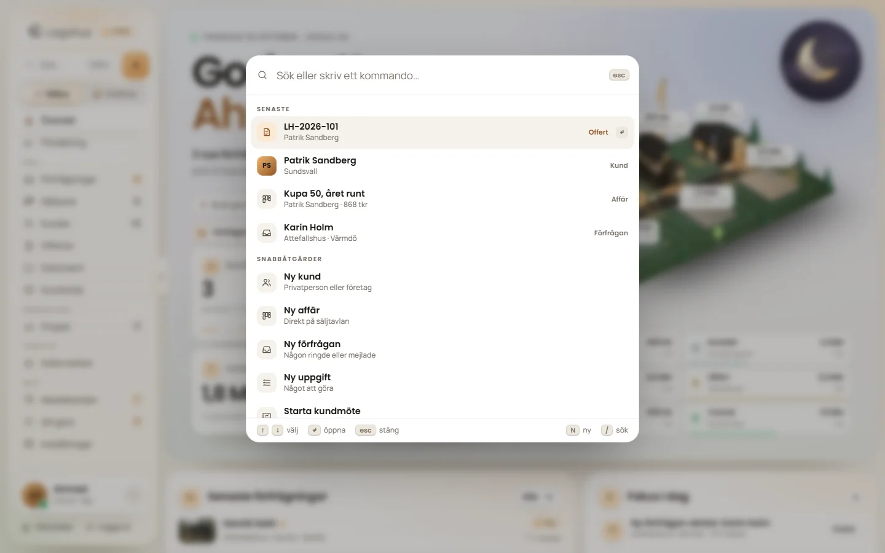
Varje morgon
Översikten säger var du börjar.
- Dagens läge i en mening: nya förfrågningar, öppna affärer och husen i produktion.
- Nyckeltal: nya förfrågningar, öppna affärer, vunnet i år, i produktion.
- Byggarbetsplatsen: varje hus är ett säljsteg.
- Fokus i dag och Att göra i dag – bocka av eller skjut upp.
Steg 1 · Förfrågan
Förfrågningarna med svarsmål.
- Förfrågningar från hemsidan, telefon och mejl – Lägg in förfrågan när någon ringer.
- Filtrera på status och miljö: vid havet, i skogen, på fjället, i trädgården.
- Svarsmålet är 24 timmar – inkorgen visar vem som väntat längst.
- J K bläddrar, U öppnar ett svarsutkast.
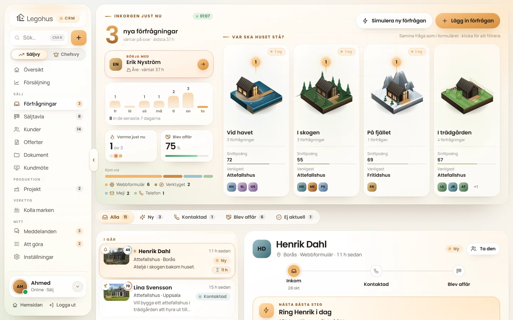
Steg 2 · Kund
Nästa bästa steg, poäng och samtalsguide.
- Ta den – så ser teamet att förfrågan är din.
- Ring, skriv ett svarsutkast eller tryck på Påminn om 2 h.
- Samtalsguiden: detaljplan, byggnader, tomtgräns, framkomlighet, grund, tidplan.
- Kontaktad skapar kundkortet. Skapa affär tar nästa steg.
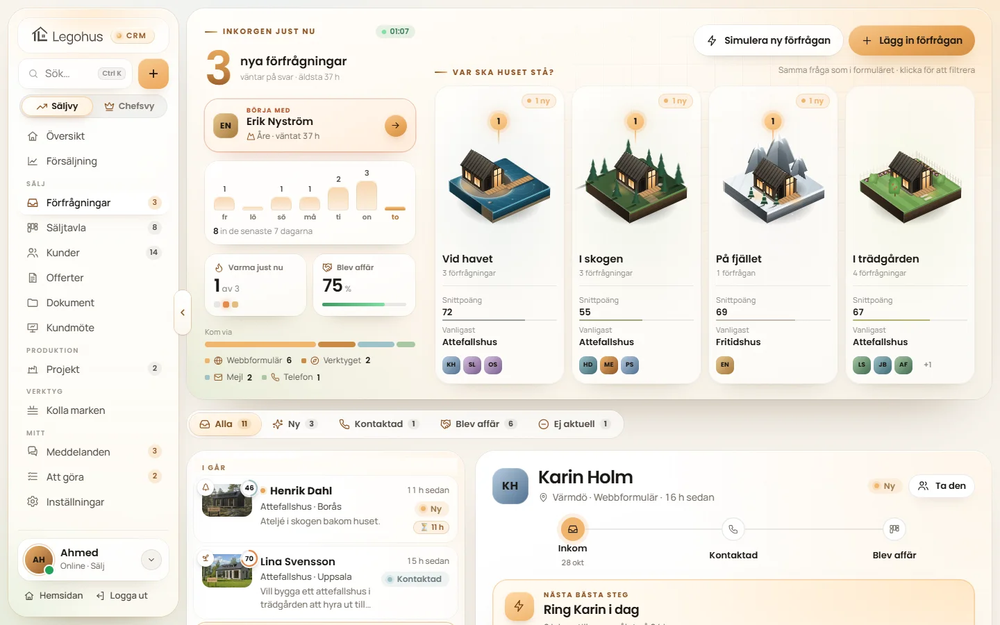
Steg 3 · Säljtavlan
Sex steg. Chansen i procent.
- 10 %Ny förfrågan
- 20 %Kontakt tagen
- 40 %Tomt och platsbesök
- 60 %Offert skickad
- 75 %Förhandling
- 100 %Order signerad
Öppna affärer, viktad prognos och smarta förslag överst. Filter: Mina, Står still, Har uppgift, Över 600 tkr.
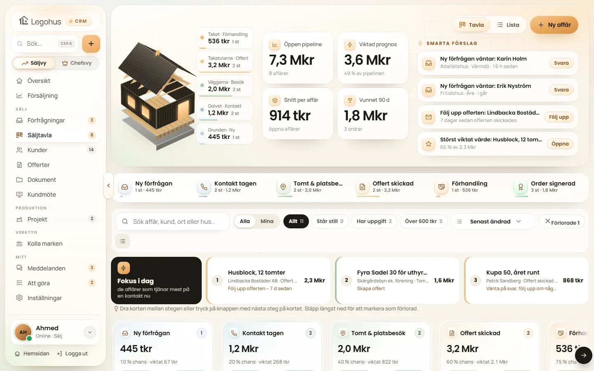
Säljtavlan
Dra korten framåt.
- Dra ett kort till nästa steg – eller tryck Vidare på kortet.
- Dagarna i steget färgas: färsk, lugn eller står still (över tio dagar).
- Ring, logga och lägg en uppgift direkt på kortet.
- Släpp längst ned för att markera som förlorad – med orsak. Går att återuppta.
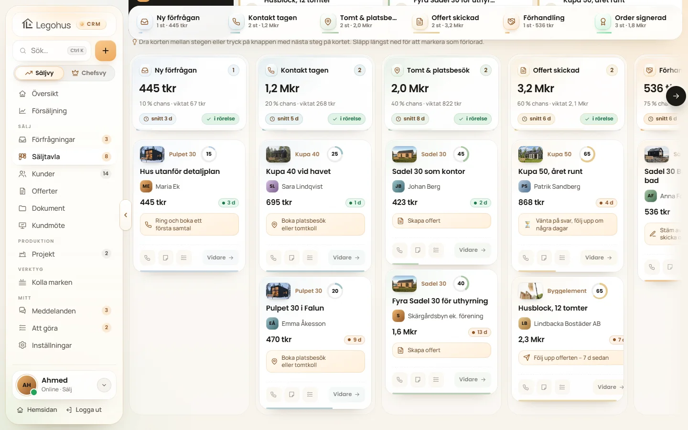
Steg 4 · Affär
Allt om affären på en sida.
- Affärsvärde, chans att vinna, dagar i steget och viktat värde.
- Nästa bästa steg med knappen direkt: boka platsbesök, skapa offert, följ upp, signera.
- Historiken: logga anteckning, samtal, mejl eller möte med en rad.
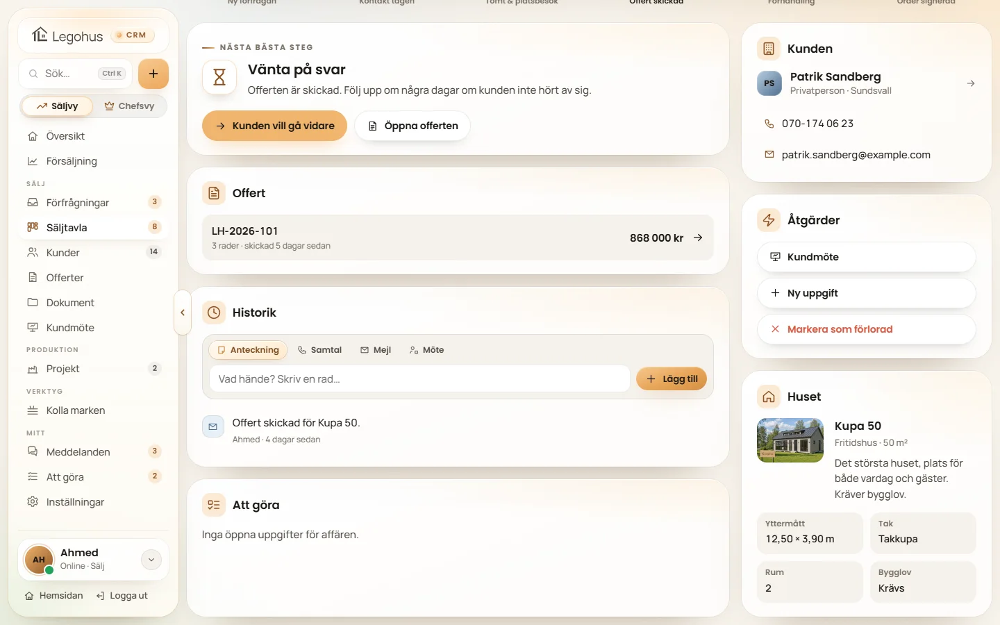
Kunderna
Kundresan och de varma kunderna.
- Alla kunder med värde och senaste kontakt – som kort eller lista.
- Behöver uppmärksamhet lyfter dem du bör ringa nu.
- Snabbknappar: Ring, Mejla, Kundmöte, Ny affär.
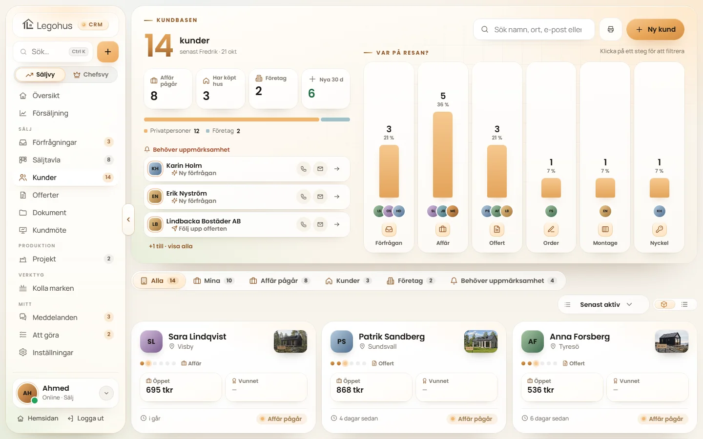
Kunderna
Kundhälsan säger när du ska höra av dig.
- 0–100: hur nyligen ni hördes, minus försenade uppföljningar, plus öppen eller vunnen affär.
- Kundresan, nästa steg, affärer, offerter och förfrågningar.
- Kontakter senaste 90 dagarna och hela historiken – även anteckningar från kundmöten.
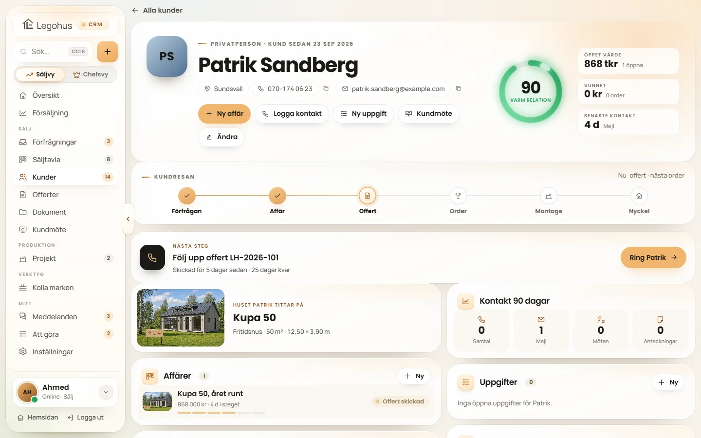
Steg 5 · Kundmöte
Förbered. Presentera.
- Välj affär och upplägg: Fullt möte, Kort möte eller Bara kalkylen.
- Kommande möten, logga ett möte i efterhand och tidigare möten.
- Starta presentation öppnar bildspelet i helskärm.
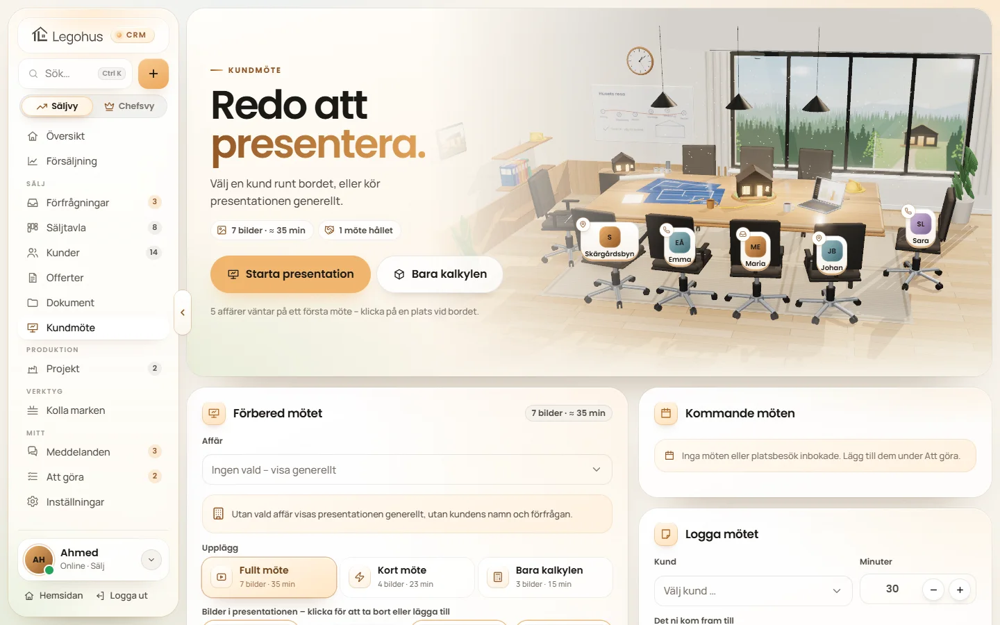
Kundmöte
Husen i 3D och kalkylen på plats.
- Välkommen, er förfrågan, byggt under tak, husen i 3D, vad ni får bygga, så går det till, kalkylen, nästa steg.
- K kalkylen, N anteckningar, Esc avsluta.
- Spara som offert direkt ur kalkylen. Avsluta med Boka platsbesök.
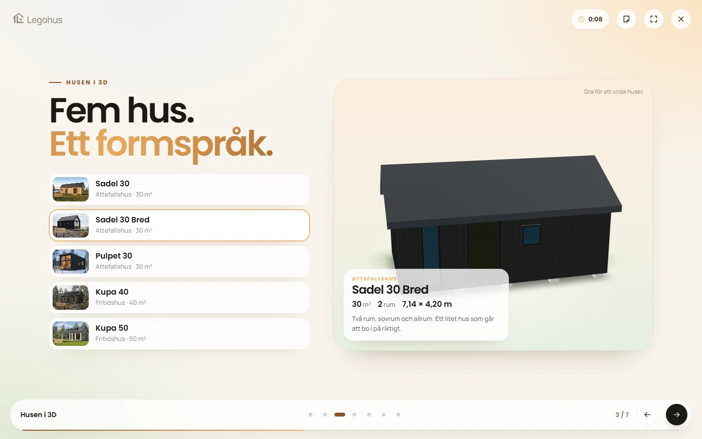
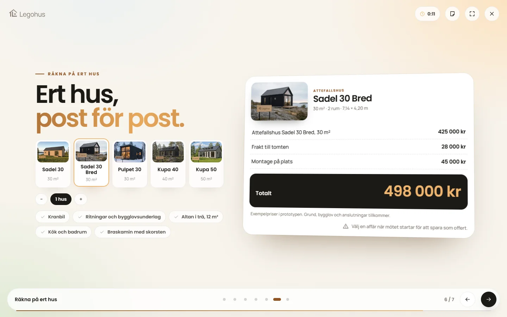
Steg 6 · Offert
Utkast, skickad, godkänd.
- Skapa offert på affären – huset, frakt och montage ur prislistan.
- Ändra rader, lägg till tillval. Summan blir affärens värde.
- Skriv ut / PDF → Markera som skickad. Giltig i 30 dagar.
- Ändring efter skickad? Ny version. Snart ute? +14 d.
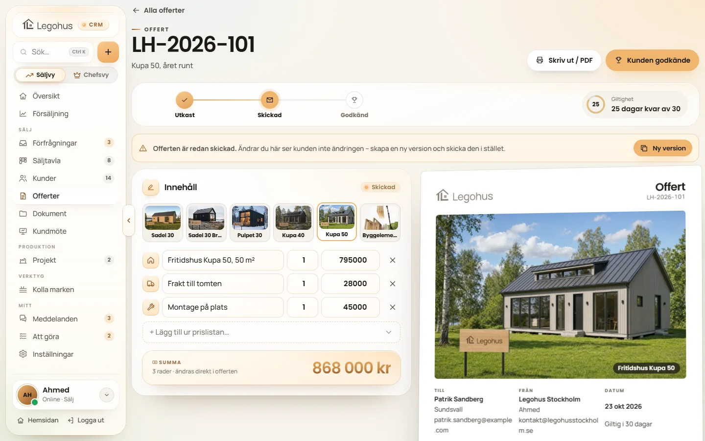
Offerter
Följ upp innan tiden går ut.
- Väntar på svar, träffsäkerhet, tid till ja och godkänt värde.
- Går ut snart: följ upp eller förläng.
- Per hus och vanligaste posterna.
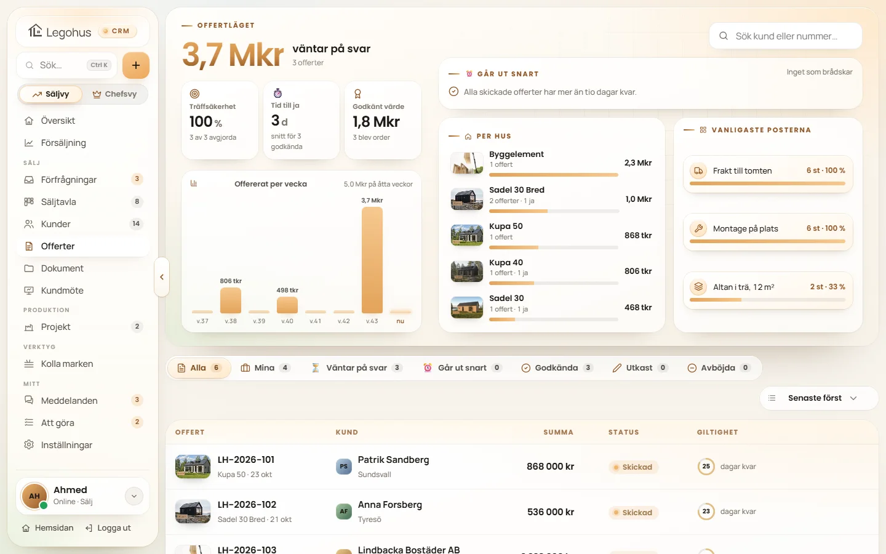
Steg 7–8 · Vunnen och projekt
Order signerad – projektet börjar.
- Order signerad (eller Kunden godkände): affären vunnen, offerten godkänd, konfetti.
- Ett projekt skapas hos produktionen med montage om tolv veckor.
- Ritning och lov → Tillverkning → Grund och mark → Leverans och montage → Slutbesiktning → Klart.
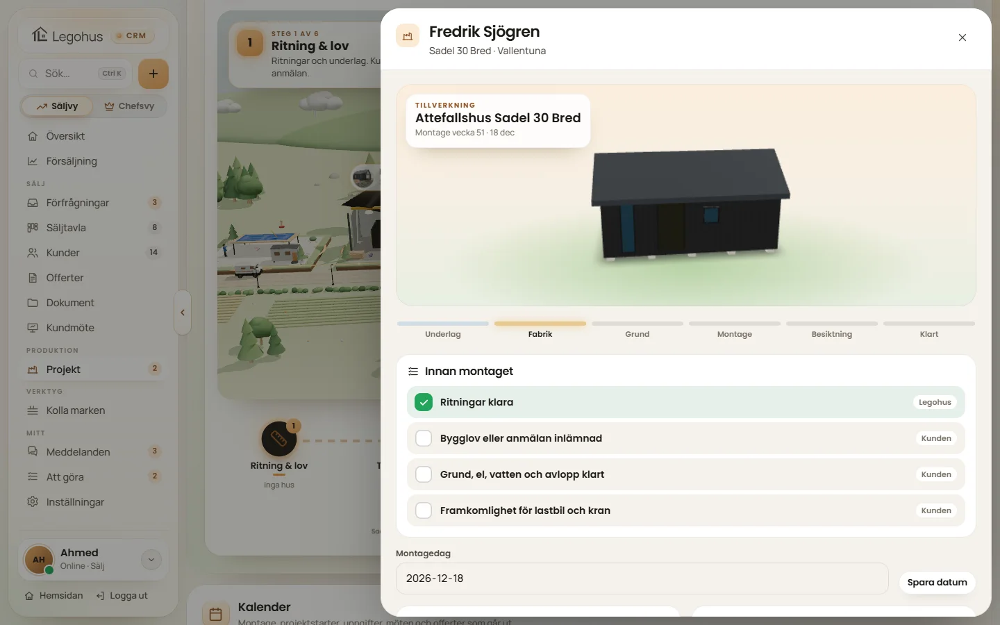
Produktion
Husets resa från ritning till nyckel.
- Nästa montage, det som ska åtgärdas (kundens och vår del).
- Husets resa i 3D – kundernas hus står på sitt steg.
- Kalendern med montage, projektstarter, uppgifter, möten och offerter som går ut.
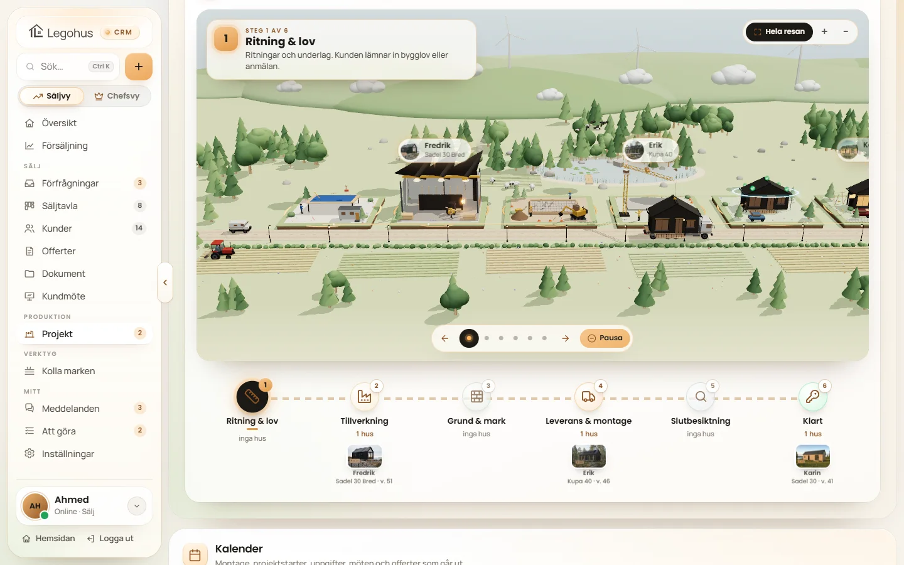
Steg 9 · Dokument
Arkivet och sju mallar.
- Offerter, ordrar, ritningar, bygglov, checklistor och foton – sök, filtrera, exportera.
- Att hantera: offerter utan svar, underlag som saknas.
- Mallar: följebrev, platsbesök, tack för ordern, checklista inför montage, leveransplan, egenkontroll, överlämningsprotokoll.
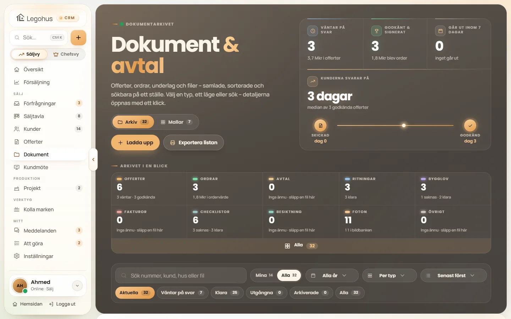
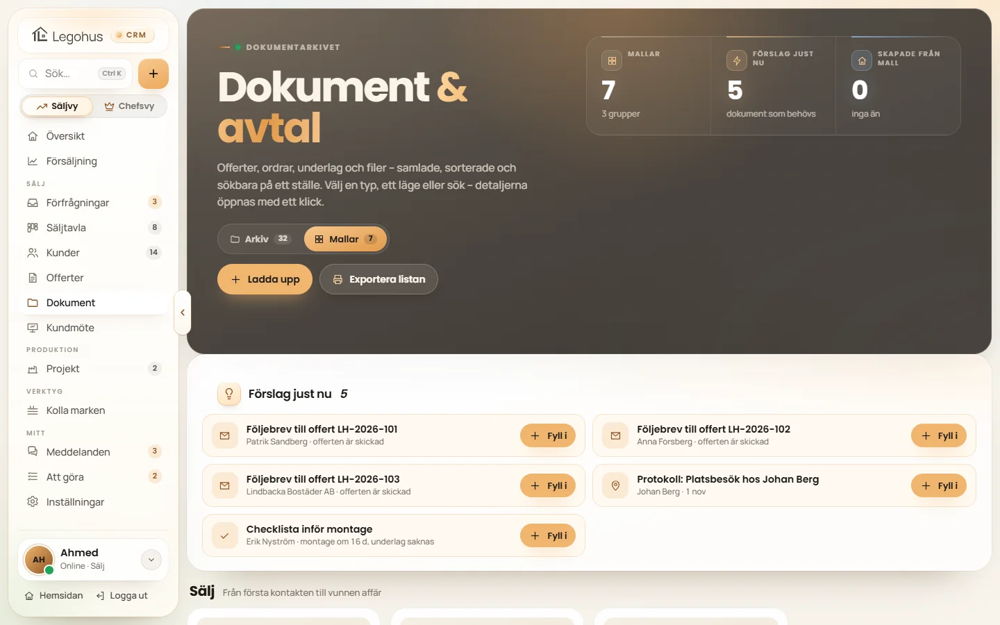
Mitt
Att göra, kalender och chatt.
- Att göra: veckan, nya uppgifter kopplade till kund eller affär, bocka av, skjut upp.
- Meddelanden: teamchatten med @ och #, svar, reaktioner och filer.
- Min profil: status, nyckeltal och din kalender (ledighet, sjukanmälan, kalenderfil).
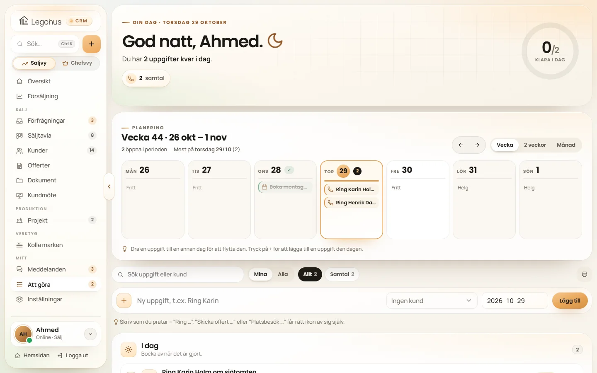
För chefen
Så går teamet.
- Teamets öppna affärer, viktad prognos, vunnet 90 dagar och vinstgrad.
- Teamet just nu, vem jobbar när och teamets kalender.
- Fördela nya förfrågningar – eller jämnt med Fördela smart. Topplistan.
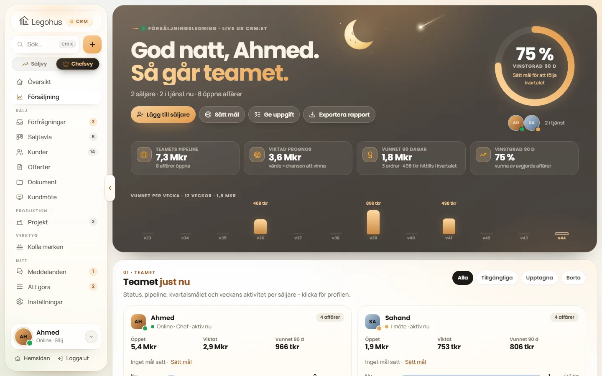
För administratören
Kontroll, konton och säkerhet.
- Kontrollcentral: hela CRM:et i en blick.
- Adminpanel: konton, roller, behörigheter, data och säkerhetsloggen.
- Säkerhet: sju kontroller och poängen över tid.
- Supportläget: gå in i en säljares konto och hjälp till.
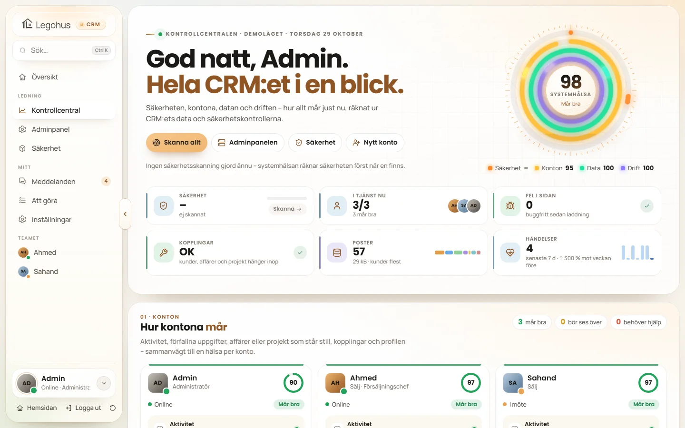
Spara tid
Kortkommandona.
- Ctrl K
- Sök och kommandon (⌘ K på Mac)
- /
- Sök
- N
- Skapa ny
- [
- Fäll in menyn
- ?
- Guiderna
- J K
- Bläddra i förfrågningarna
- U
- Svarsutkast
- Bläddra i presentationen
- K
- Kalkylen i presentationen
- N
- Anteckningar i presentationen
- Enter
- Skicka i chatten (Shift + Enter ny rad)
- Esc
- Stäng panel, sökning eller presentation
Hjälp när du behöver den
Guiden pekar var du ska klicka.
- Knappen ? vid menyn (eller tangenten ?) öppnar alla guider.
- Guida mig på den här sidan startar rätt guide direkt.
- Vissa steg väntar på att du klickar själv – eller tryck Gör det åt mig.
- Klara guider bockas av.
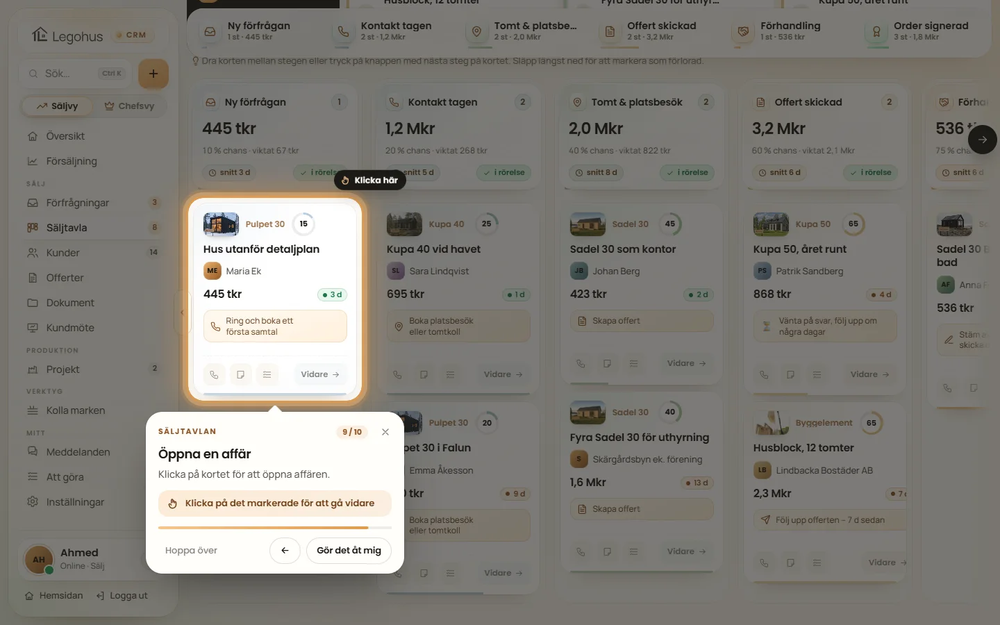
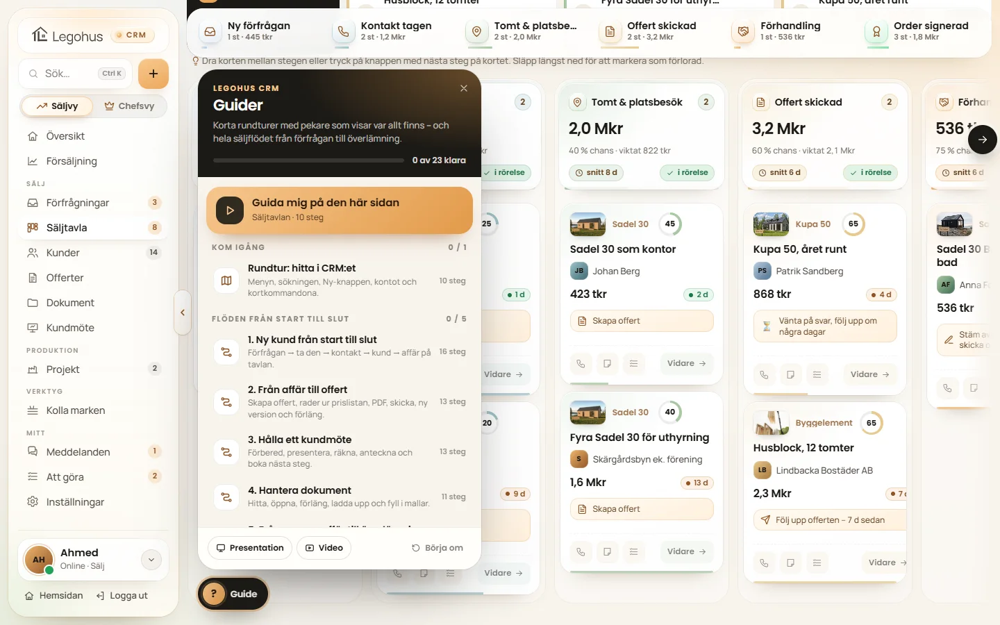
Din första dag
Fem saker att göra i dag.
- Ta rundturenTvå minuter – hitta i CRM:et
- Svara på en förfråganFlöde 1: från förfrågan till affär
- Skicka en offertFlöde 2: från affär till offert
- Öva på kundmötetFlöde 3: presentation och kalkyl
- Vinn en affärFlöde 5: från order till nyckel
Allt är exempeldata – öva så mycket du vill. Inställningar → Återställ exempeldata tar tillbaka allt.